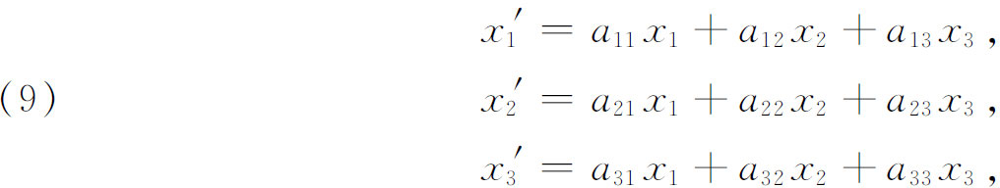
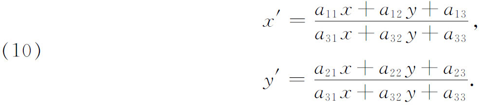
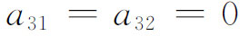
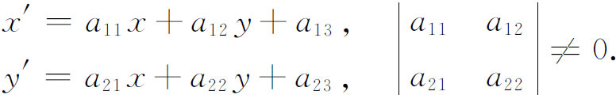
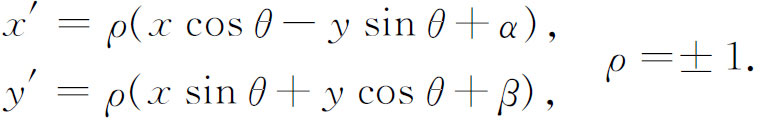
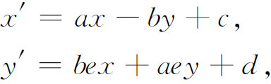
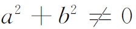
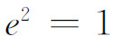
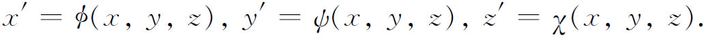
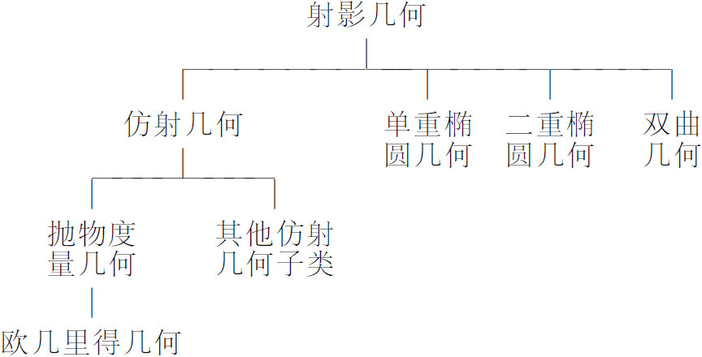

5．从变换观点来看待几何
克莱因成功地把各种度量几何归纳为射影几何之后，使他寻求刻画各种几何的特征，不只是基于非度量的和度量的性质以及各种度量间的区分，而是基于更广泛的观点，即基于这些几何与那些早已有的几何所要完成的目标是什么，来刻画它们的特征。他给出这种刻画是在1872年的一次演说《近代几何研究的比较评述》（Vergleichende Betrachtungen über neuere geometrische Forschungen）(18)。这是他被接纳进入埃尔兰根大学教授会时的演讲，这次演说中所表达的观点后来以埃尔兰根纲领之称闻名于世。
克莱因的基本观点是，每种几何都由变换群所刻画，并且每种几何所要做的实际就是在这个变换群下考虑其不变量，再者一个几何的子几何是在原来变换群的子群下的一族不变量。在此定义下相应于给定变换群的几何的所有定理仍然是子群几何中的定理。
虽然克莱因在他论文中没有用解析式子来陈述他所讨论的变换群，为了明显起见我们要用一些解析式子。根据他的几何概念，射影几何（比如说是二维的）是研究从一个平面上的点到另一个平面上的点或者到同一平面上的点（直射变换）的变换群下的不变量。每个变换形式为

其中设为齐次坐标，aij是实数。系数行列式必须不为零。非齐次坐标的变换用下式表示：

同样aij的行列式必须不为零。射影变换群下的不变量，举例说有线性、共线性、交比、调和集和保持为圆锥曲线不变等。
射影群的一个子群是一族仿射变换(19)。这个子群定义如下：设在射影平面上固定任一直线l∞，l∞上的点称为理想点或无穷远点，l∞称为无穷远直线。射影平面上其他点与直线称为寻常点，这些都是欧几里得平面上通常的点。直射变换仿射群是射影群的子群，使l∞不变（但该线上的点无需保持不变），仿射几何是在仿射变换下不变的那批性质与关系。二维齐次坐标的仿射变换，其代数表示为以上的方程（9），但在其中

，并有相同的行列式条件。非齐次坐标的仿射变换表示为
在仿射变换下直线变到直线，平行直线变到平行线。然而，长度与角的大小要改变。仿射几何由欧拉首先注意到而后由默比乌斯在其《重心坐标计算》一书中指出。它在形变力学的研究中有用。
任何度量几何群，除了上面行列式的值必须是＋1或－1外，和仿射群相同。第一个度量几何是欧几里得几何。要定义这种几何群，我们从l∞开始，并假设在l∞上有固定的对合变换。我们要求这个对合变换没有实的二重点，而以∞处的圆点作为（虚的）二重点。现考虑所有那样的射影变换，它们不仅使l∞不变而且把对合的任何点变到对合的对应点，此即蕴涵每个虚圆点变到自身。欧几里得群的这些变换，代数地表达成非齐次（二维）坐标为

不变的是长度、角的大小、任何图形的大小与形状。
用这种分类法的术语来讲，欧几里得几何就是在这类变换下的一组不变量。这类变换是旋转、平移和反射。要得到关于相似形的不变量，我们引进仿射群的子群，名为抛物度量群。这个群定义为一族射影变换，它使得l∞上的对合不变，这就意味着每一对相应的点变到相应的另一对点。非齐次坐标的抛物度量群的变换具有形式

其中

，且
。这些变换保持角的大小不变。要刻画双曲度量几何，我们再回到射影几何，在射影平面上考虑一个任意的、实的、非退化的二次曲线（绝对形）。射影群的子群使这个二次曲线不变的（但不必要求逐点不变）叫做双曲度量群，相应的几何叫做双曲度量几何。其中的不变量是与叠合有关的那些量。
单重椭圆几何是一种几何，对应于射影变换的子群，使得射影平面上一个确定的虚椭圆（绝对形）不变。椭圆几何平面是实射影平面，且其不变量是与叠合有关的那些量。
即使二重椭圆几何也能包括在这种变换观点之内，但我们必须从三维变换群出发来刻画二维的这种度量几何。变换的子群由那些三维射影变换构成：它们把空间的有限部分的一个定球（曲面）S变换到自身，球面S就是二重椭圆几何的“平面”。同样，不变量是与叠合有关的那些量。
在四种度量几何（即欧几里得几何、双曲几何和两类椭圆几何）之中，相应子群中允许的变换就是通常说的刚体运动，而且只有这些几何允许刚体运动。
克莱因引进若干中间分类，我们将不在此重复，以下的表格表示主要几何间的关系。
克莱因又考虑了比射影几何更一般的几何。这时（1872）代数几何作为独立的学科渐露头角，他引进三维的变换以刻画这种几何，用非齐次坐标写为


要求函数φ，ψ与χ是有理的与单值的，并能解出x，y，z作为x′，y′，z′的单值有理函数。这种变换称为克里摩拿变换，在其变换下的不变量是代数几何的主题（第39章）。
克莱因也提出对一一对应连续变换下具有连续逆变换的不变量进行研究，这是现代叫做同胚的一类变换，在这类变换下不变量的研究是拓扑学的主题（第50章）。虽然黎曼在他曲面的研究中也曾考虑过今日认为是拓扑学的问题，但提出把拓扑学作为一门重大的几何学科，这在1872年是一个大胆的步骤。
在克莱因时代以后，对克莱因的分类已经有了增加分类与进一步细分的可能，但不是所有的几何都能纳入克莱因的分类方案之中。今日的代数几何和微分几何都不能置于克莱因的方案之下(20)。虽然克莱因的几何观点不能证明无所不包，但它确能给大部分的几何提供一个系统的分类方法，并提示很多可供研究的问题。他的几何“定义”指引了几何思想约有50年之久。再者，他强调变换下的不变性，这个观点已超出数学之外而带到力学和一般的数学物理中去了。变换下不变性的物理问题，或者物理定律的表达方式不依赖于坐标系的问题，在人们注意到麦克斯韦方程经洛伦兹变换（仿射几何的四维子群）的不变性之后，在物理思想中都变得重要了。这种思想路线引向狭义相对论。
我们这里仅提一下几何分类的进一步研究，这些研究至少在亥姆霍兹（Hermann von Helmholtz）和李（1842—1899）他们那个时代引起很大注意。他们寻求刻画刚体运动可能的几何。亥姆霍兹的基本论文《论几何的一些基础事实》（Über die Thatsachen，die der Geometrie zum Grunde liegen）(21)证明了若在一个空间内刚体运动是可能的，则在常曲率空间内ds的黎曼表达式是唯一的可能。李探讨了同一问题，使用叫做连续变换群的理论（这在他研究常微分方程时已引进），他刻画了各种空间，在其中刚体运动是可能的，用的是这些空间所能允许的各类变换群(22)。